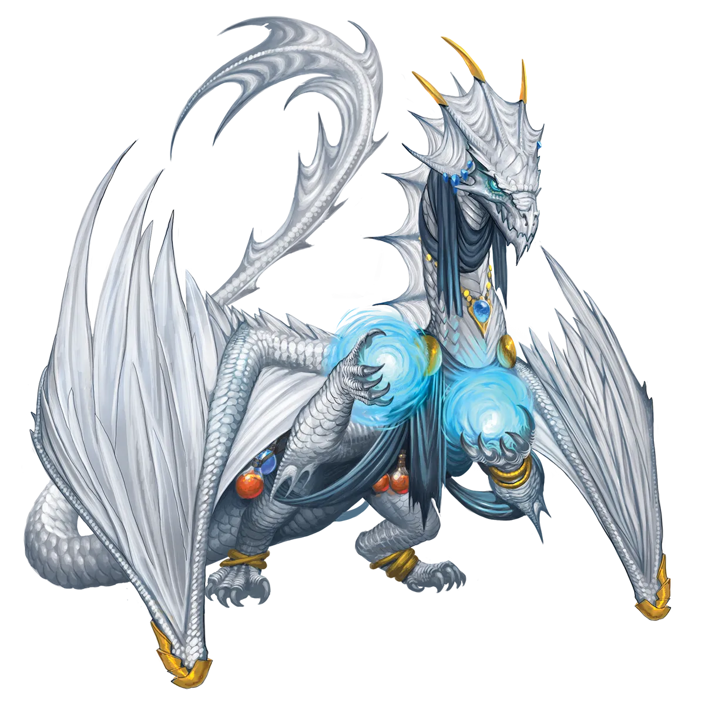
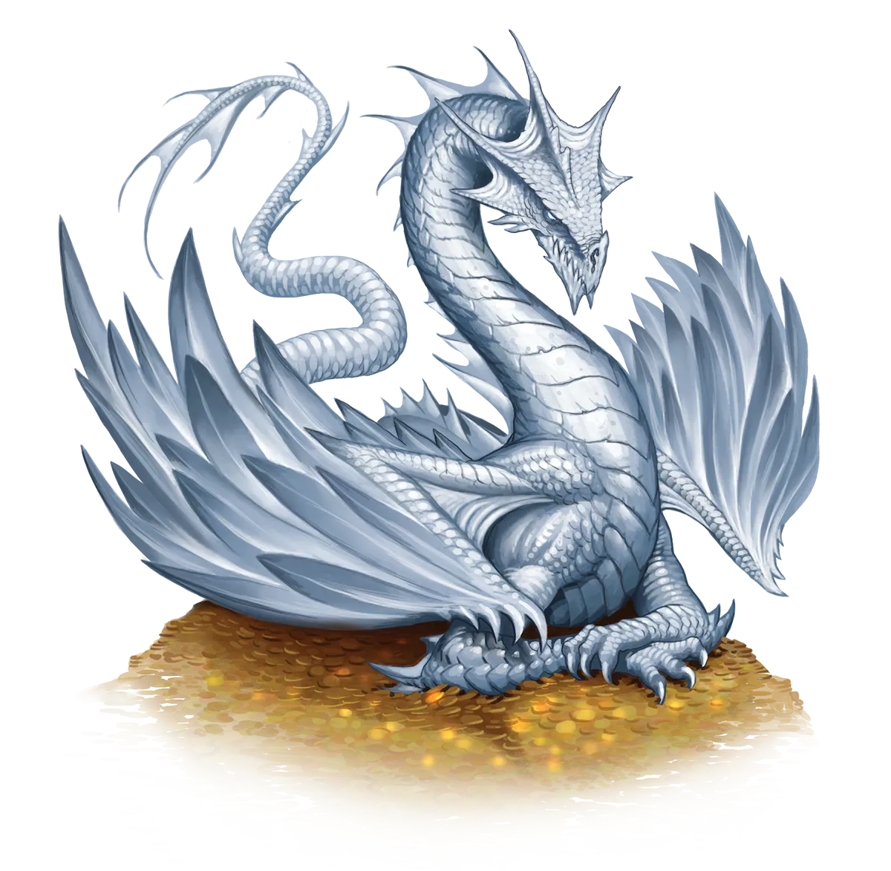

白色的谎言
有时永恒白龙在表达真实感受方面会有些困难，尤其是当这些感受是正面的时候。由于从小就学到易伤或软弱意味着孱弱，而孱弱意味着死亡，它们已社会化地形成一种观念：不能在任何人面前表现出脆弱。而表达喜爱或钦佩便暗示着易伤。你有时会发现它们在极力否认某种正面感受时露馅（也许是别人根本没有暗示过的感受），然后试图做出愤怒或凶狠的表情，迎上你的目光，直到你先移开视线。
白龙 White Dragon |
|
|
白龙特别容易进行永恒之光仪式，因为这一仪式以其他类型的龙无法完全理解的方式深深呼应着它们的处境与心态。作为最弱小的色彩龙，并且是全部真龙中最弱小的一类，白龙在竭力榨取每一点可能的优势时感受到更为沉重的压力。毕竟，若不然，它们与其他白龙之间的竞争将处于对等地位，而面对任何其他对手时它们则会从一开始就落后。因此，一个能带来更快力量增长可能性的奇特仪式？那正是超越其他白龙，甚至更强大龙类的最佳方式。而这个仪式的负面状况是你必须陷入一系列危险境地，才能锻炼你的魔法能量并加速其成长？对大多数龙类而言，这是一个巨大的绊脚石，因为它们的文化倾向于缓慢而有条不紊地积累力量。但对白龙而言，狩猎带来的原始而发自内心的刺激是它们的老友，它们为了优势而不断搏斗与拼抢，仅凭狡黠与本能存活。传统派与永恒白龙在社交上通常不会互相侮辱或贬低。没有意义也没有理由无缘无故地树立敌人。最好不要留下一个日后可能成为威胁的潜在敌人，无论是选择互不干扰、各走各路，还是在仪式之后趁永恒白龙仍然虚弱、尚未超越你并构成真正威胁之前将其杀死，都是更明智的选择。 永恒白龙并不真的需要复杂的计划或目标来推动它们去冒险。它们只想战斗，而仪式改变了它们的魔法，因此它们的魔法需要它们战斗。这是一举两得。这一信条之简单可能会让其他龙类低估永恒白龙为头脑简单或目光短浅，但事实上，尽管它们的死亡率很高，它们却也属于完成仪式后崛起最快的龙类之列，这一事实是许多傲慢的红龙常常故意忽略的。然而，永恒白龙意识到自己处于易伤状态，因此它们比起其他白龙更不可能独来独往、与整个世界为敌。它们会加入同伴团体，前提是那些同伴证明了自己的强大，有时是通过在战斗中击败白龙，而白龙随即当场宣誓忠诚。尽管那些潜在的旅伴可能会合情合理地担心刚被击败的龙会反咬一口，但在战斗中被击败后加入冒险队伍永恒白龙通常都非常真诚，并无日后背叛队伍的打算，至少除非它们有理由相信这个团体正打算对它们做同样的事。这又回到了避免潜在威胁的理念。如果这群人是白龙的盟友，那么与他们为敌是愚蠢的，但如果他们已经是白龙的威胁，那就另当别论了。 白色的谎言 有时永恒白龙在表达真实感受方面会有些困难，尤其是当这些感受是正面的时候。由于从小就学到易伤或软弱意味着孱弱，而孱弱意味着死亡，它们已社会化地形成一种观念：不能在任何人面前表现出脆弱。而表达喜爱或钦佩便暗示着易伤。你有时会发现它们在极力否认某种正面感受时露馅（也许是别人根本没有暗示过的感受），然后试图做出愤怒或凶狠的表情，迎上你的目光，直到你先移开视线。 白龙特质 White Dragon Traits 你出身于一脉凶猛残暴、富于掠食本能的极地生存者――白龙世系。 |
  |